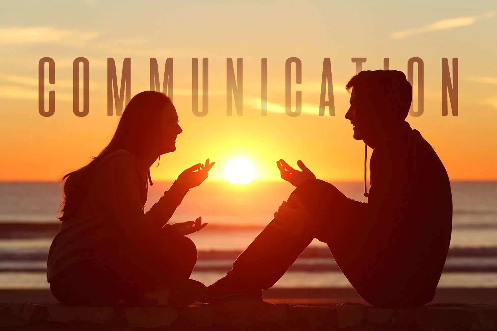
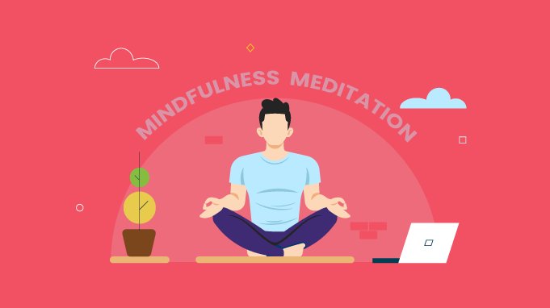

What is the goal of our lessons?
Our lessons provide insite into what makes you and me tick and how we can improve in our mental health journies.
Basic Lessons
These are the starer lessons, to ease you into our process
Self-Awareness & Emotional Intelligence

These are the main things we will be dealing with in this lesson:
- How we Recognizing and labeling emotions.
- Understanding how our thoughts influence our feelings and behaviors.
- Practicing mindfulness to stay present.
Stress & Anxiety Management

These are the main things we will be dealing with in this lesson:
- Identifying stressors and coping mechanisms (exercise, deep breathing, time management)
- Challenging catastrophic thinking patterns.
- Setting boundaries to prevent burnout.
Building Resilience

These are the main things we will be dealing with in this lesson:
- Reframing setbacks as learning experiences.
- Developing problem-solving skills.
- Cultivating a growth mindset.
Healthy Relationships & Communication

These are the main things we will be dealing with in this lesson:
- Active listening and assertiveness training.
- Recognizing toxic relationships and setting boundaries.
- Navigating conflict constructively.
Self-Care & Lifestyle Balance
These are the main things we will be dealing with in this lesson:
- Prioritizing sleep, nutrition, and physical activity.
- Balancing work, social life, and personal time.
- Engaging in hobbies and activities that bring joy.
Depression & Mood Regulation

These are the main things we will be dealing with in this lesson:
- Identifying symptoms of depression
- Behavioral activation (engaging in meaningful activities)
- Seeking therapy or support when needed
Mindfulness & Meditation

These are the main things we will be dealing with in this lesson:
- Practicing grounding techniques.
- Using meditation to reduce rumination.
- Incorporating gratitude practices.
Breaking Stigma & Seeking Help

These are the main things we will be dealing with in this lesson:
- Normalizing therapy and mental health care
- Understanding when to seek professional support
- Exploring different types of therapy (CBT, DBT, psychodynamic)
These are our Advanced Lessons
This is our finale lessons we can offer you, if your done with them, you are offically an expert on mental health!
Trauma & Healing

These are the main things we will be dealing with in this lesson:
- Understanding PTSD, complex trauma, and somatic healing.
- Exploring EMDR, IFS (Internal Family Systems), or trauma-focused therapies.
Shadow Work & Deep Self-Exploration

These are the main things we will be dealing with in this lesson:
- Identifying unconscious patterns from childhood.
- Working with repressed emotions and limiting beliefs.
Existential & Spiritual Well-Being

These are the main things we will be dealing with in this lesson:
- Coping with existential anxiety and finding meaning.
- Exploring philosophies like Stoicism or Buddhism for mental resilience.
Advanced Emotional Regulation

These are the main things we will be dealing with in this lesson:
- Dialectical Behavior Therapy (DBT) skills for intense emotions.
- Learning distress tolerance and radical acceptance.
Neuroplasticity & Cognitive Enhancement

These are the main things we will be dealing with in this lesson:
- How habits and thoughts reshape the brain.
- Biofeedback and neurotherapy techniques.
Attachment Theory & Relationship Dynamics

These are the main things we will be dealing with in this lesson:
- Understanding how early attachment affects adult relationships.
- Moving from anxious/avoidant to secure attachment.
Personality & Psychological Typing

These are the main things we will be dealing with in this lesson:
- Exploring frameworks like Enneagram, MBTI, or Big Five for self-awareness.
- Using personality insights for personal growth.
Psychedelic & Alternative Therapies

These are the main things we will be dealing with in this lesson:
- Research on ketamine, psilocybin, and MDMA-assisted therapy.
- The role of breathwork and holotropic states in healing.
Philosophical & Ethical Resilience

These are the main things we will be dealing with in this lesson:
- Developing a personal philosophy for adversity.
- Exploring moral injury and values-based living.
Advanced Meditation & Consciousness Work

These are the main things we will be dealing with in this lesson:
- Deepening meditation practice (Vipassana, Zen, transcendental).
- Exploring non-duality and ego dissolution.